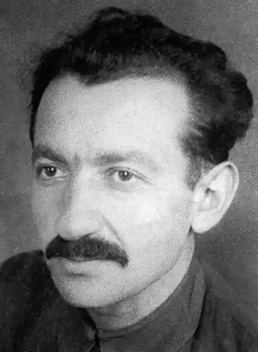

Юхвід Леонід Аронович — український письменник, сценарист. Автор кількох повістей та п'єс, сценарію художнього фільму за своєю п'єсою "Весілля в Малинівці".
Народився 5 травня 1909 року, Гуляйполе, тепер Запорізької області в родині юриста. За фахом — робітник друкарні, освіту здобув заочно.
З 1929 по 1933 рік працював у редакції криворізької газети "Червоний гірник", в якій до того друкував перші оповідання й вірші; з 1933 року — на літературній роботі в Харкові. З 1936 задля Першої державної української музичної комедії разом з М. Авахом написав лібрето: "Сорочинський ярмарок", "Весілля в Малинівці", "Майська ніч". Учасник Німецько-радянської війни. На початку війни був редактором радіостанції "Дніпро", потім служив кореспондентом у фронтових газетах. Нагороджений орденом Вітчізняної війни 2-го ст., медалями. Першу збірку оповідань "На життя" видав у 1931 році. Наступні видання: повість "Вибух" (1932), п'єси "Весілля в Малинівці" (1937), "Ніч у червні" (1941), "Чудовий край" (1946), повість: "Мишко Конюшенко" (1946), п'єса "Блакитна фортеця" (1949), збірки п'єс "Комедії" (1954) та "Маленькі комедії" (1958), п'єси "До побачення в травні" (1964), "Вояка" (1953), "Оля" (1967) та ін. На основі п'єси Леоніда Юхвіда "Весілля в Малинівці" у 1938 році в Київському театрі оперети було створено однойменну оперету. Її автор — головний диригент театру композитор Олексій Рябов, у творчому доробку якого загалом понад 20 оперет і музичних комедій. Практично одночасно, у 1937–1938 роках, з'явилася і російськомовна версія оперети композитора Бориса Александрова на основі лібретто Леоніда Юхвіда та Віктора Тіпота. У 1967 році на кіностудії Ленфільм режисером Андрієм Тутишкіним російську версію оперети було екранізовано. Цей фільм став лідером прокату 1967 року. А серед лідерів прокату фільмів радянських часів (1940—1989 років) музична комедія "Весілля в Малинівці" посідає почесне 5 місце — 74,6 млн глядачів. Помер Леонід Аронович Юхвід у м. Харкові.